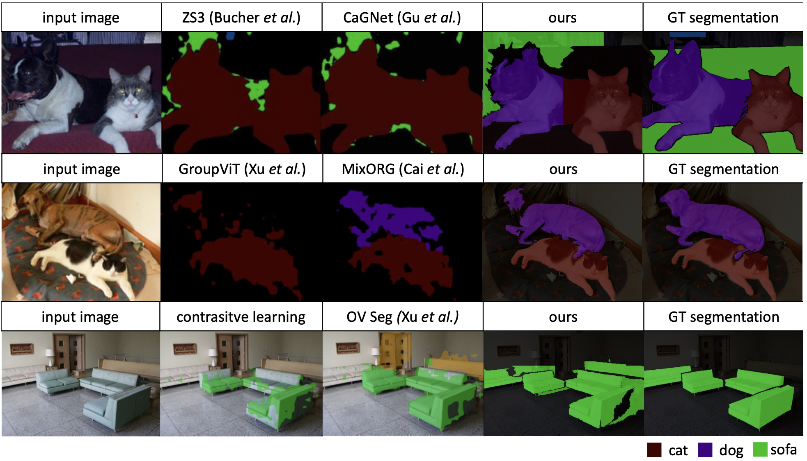

Proposed method
Two stages of Lazy Visual Grounding (LaVG)
And then it later assigns the class in text descriptions to each object with cross-modal similarity (object grounding).
Results
Quantitative comparison

Comparison of computational cost
Browse more qualitative results
Comparison with different models

Open-vocabulary segmentation results of images in the wild

Citation
@inproceedings{lavg,
title={In Defense of Lazy Visual Grounding for Open-Vocabulary Semantic Segmentation},
author={Kang, Dahyun and Cho, Minsu},
booktitle={European Conference on Computer Vision and Pattern Recognition (ECCV)},
year={2024}
}